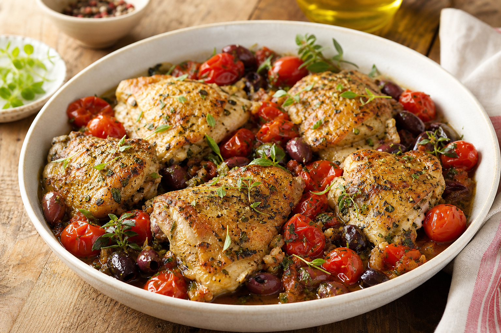
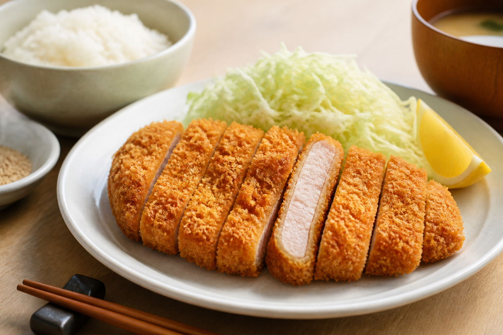
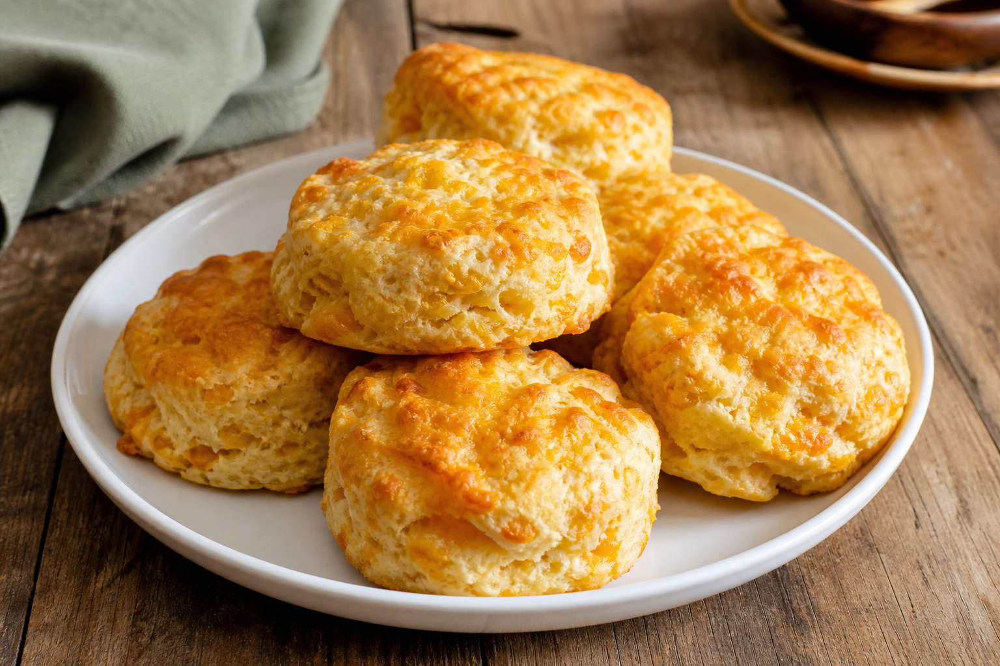
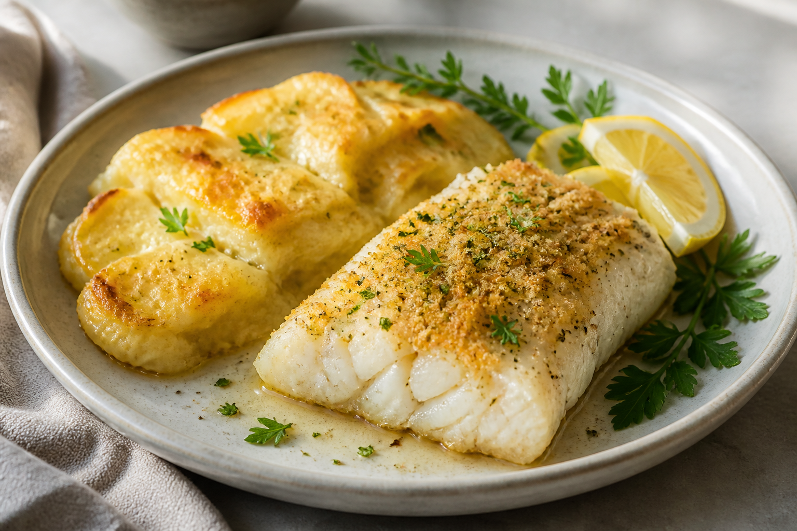
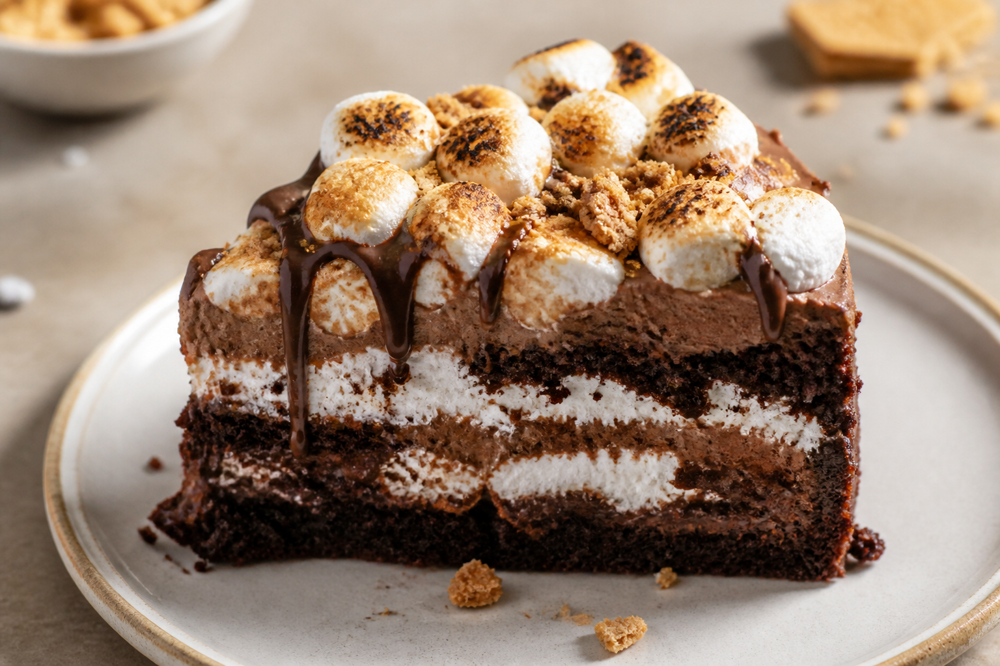

Featured Recipe

Deep Dish Skillet Pizza
Prep Time
30–40 minutes
Level
Medium
Make a warm, cheesy deep-dish pizza in one skillet. A crisp crust, savoury sauce, and your favourite toppings make this a simple meal for sharing.
How to Prepare
- Heat the oven and prepare the pizza dough in an oven-safe skillet.
- Add tomato sauce, cheese, and your favourite toppings.
- Bake until the crust is golden and the cheese is bubbling.
Recipes
Sausy Tortelloni Farm

Prep Time
20–30 minutes
Level
Easy
How to Prepare
- Cook the tortelloni in boiling water until tender.
- Warm your favourite pasta sauce in a pan.
- Mix the pasta with the sauce and serve with herbs or cheese.
Mediterranean Chicken Thighs

Prep Time
20–30 minutes
Level
Easy
How to Prepare
- Season the chicken thighs with herbs, salt, and pepper.
- Cook the chicken in a pan until browned and fully cooked.
- Add tomatoes and olives, then simmer briefly before serving.
Crispy Pork Katsu and Rice

Prep Time
20–30 minutes
Level
Medium
How to Prepare
- Coat pork slices in flour, egg, and breadcrumbs.
- Fry until crisp, golden, and cooked through.
- Slice the pork and serve it with warm rice.
Cheddar Cheese Biscuits

Prep Time
40–50 minutes
Level
Medium
How to Prepare
- Mix flour, baking powder, butter, milk, and cheddar cheese.
- Shape the dough into small biscuits on a baking tray.
- Bake until the biscuits are golden and fluffy.
Baked Cod and Scalloped Potatoes

Prep Time
30–40 minutes
Level
Easy
How to Prepare
- Arrange the cod and sliced potatoes in a baking dish.
- Season with herbs and bake until the potatoes are tender.
- Check that the fish flakes easily with a fork before serving.
S’mores Cake

Prep Time
50–60 minutes
Level
Medium
How to Prepare
- Bake the chocolate cake layers and let them cool.
- Layer the cake with chocolate, marshmallow, and graham crumbs.
- Top with toasted marshmallows before serving.